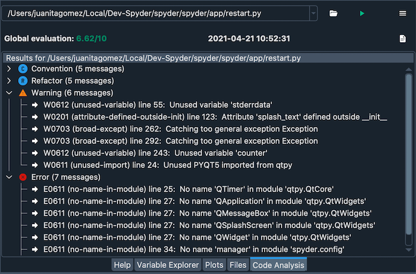
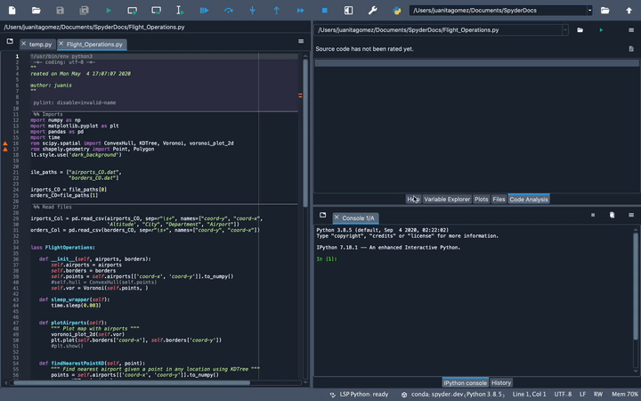
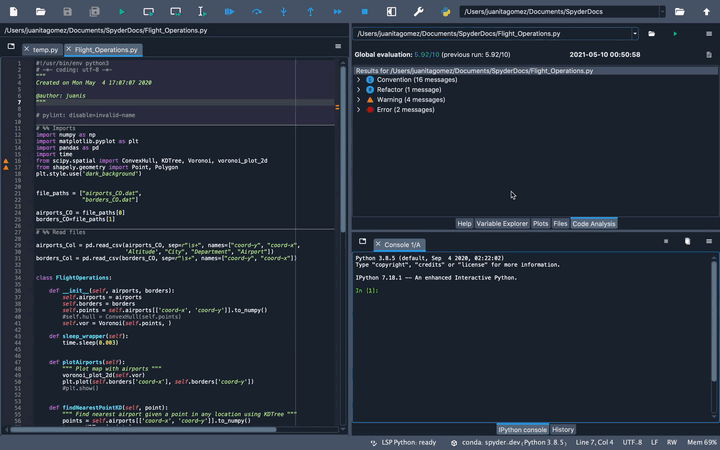
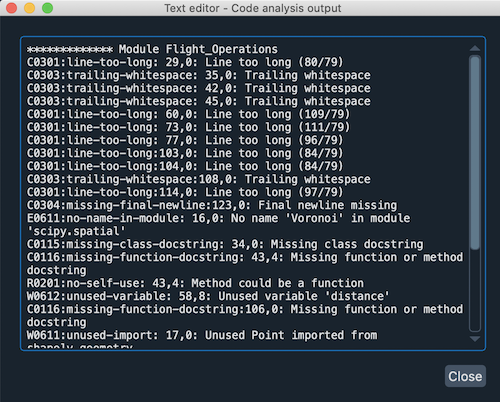
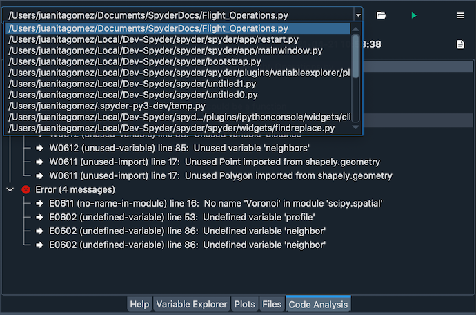
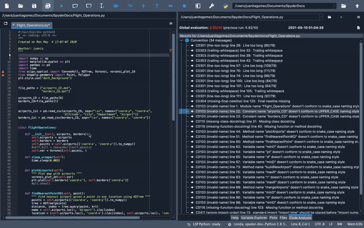
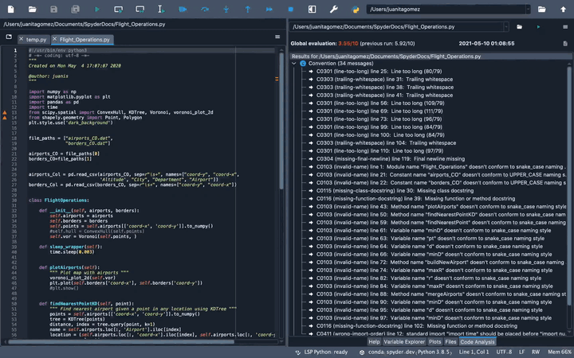

Code Analysis#
The Code Analysis pane detects style issues, bad practices, potential bugs, and other quality problems in your code, all without having to actually execute it. Based on these results, it also gives your code an overall quality score. Spyder’s code analyzer is powered by the best-in-class Pylint back-end, which can intelligently detect an enormous and customizable range of potential errors, bad practices, quality issues, style violations, and more.

Using the code analyzer#
You can select the desired file to analyze directly in the Editor by clicking anywhere within it. To run the analysis, press the configurable shortcut (F8 by default), select from the menu bar or click the Analyze button in the Code Analysis pane. If the Code Analysis pane is not visible, you can open it under . All standard checks are run by default. To go directly to a line in the Editor highlighted by a failed check, just click its name.

You can also manually enter the path of a file you’d like it to check in the path entry box in the pane’s toolbar.
The analyzer works with both individual scripts and whole Python packages (directories containing an __init__.py file).

Cancel analyzing a file with the Stop button, and if analysis fails, click the Output button to find out why. If Pylint does succeed, the Output will show the raw plain text analysis results on the selected file, allowing you to easily browse and copy/paste the full message names and descriptions.

Finally, you can click the dropdown or press the dropdown arrow in the filename field to view results of previous analyses.

Advanced options#
You can turn certain messages off at the line, block or file/module level by adding a # pylint: disable=MESSAGE-NAMES comment at the respective scope, where MESSAGE_NAMES should be replaced with a comma-separated list (or single value) of Pylint message names.
For example, a directive might look like # pylint: disable=invalid-name, or # pylint: disable=fixme, line-too-long.

Or, you can globally suppress specific messages and adjust other Pylint settings by editing the .pylintrc configuration file in your user folder.
If it doesn’t exist, you can generate it by running pylint --generate-rcfile > .pylintrc in your user directory, from Anaconda Prompt (on Windows) or your terminal (macOS/Linux).
For more details on configuring Pylint, see the Pylint documentation.
